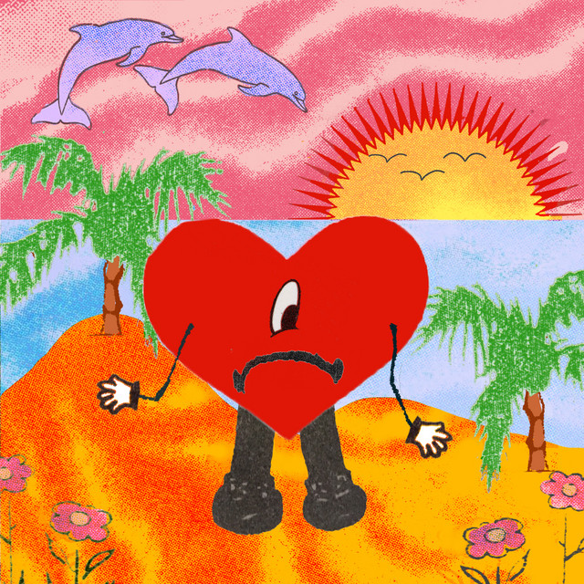

Cancionero | |


|
Andrea
Eh-ah Quiero alguien que se atreva Cuatro de la mañana y Andrea Saliendo de La Perla, muchos la critican sin conocerla Calle como un Civic, inteligente como un Tesla Soñando con alguien que pueda comprenderla Y no quiera cambiarla, sólo quererla Ey, sólo quererla De la IUPI pa la Inter, de la Inter pa Sagrado Equivocándose de amores, en lo que llega el indicado Quiere quedarse en PR, no irse pa ningún estado Pero todo se ha complicado, como si ser mujer fuera un pecado La demonia ha despertado Ey, una guerrera Juana de Arco, temperamental, Niurka Marcos A la buena beso y abrazo, a la mala botellazo sin soltar el vaso Le gustaba el basquet, leer "Tú" y hacerse lazos Pero de esa niña sólo quedan pedazos Se ha buscao un par de casos por no aguantarle chiste a ningún payaso, ey Mírala cómo camina, lo que le falta es la tarima Cansá de esperar propina y de lo que su familia opina Pa colmo ahora el gobierno la llama "asesina" Una diva campesina Chico, quédate en tu esquina, ey Y no pida rosas si no aguantas espina, no No quiero que nadie me diga lo que yo tengo que hacer Se ponen a hablar y conmigo verán, no van a joder Que digan lo que sea Yo subo y bajo como la marea Se tratan de montar y tambalea Quiero alguien que se atreva Que se atreva y me entienda a mí Una loca que no quiere un loco Quiere vino tinto y sushi de Yōko Días de playita, helado de coco Se merece tanto y recibe tan poco La mai reza por un doctor, ingeniero Y ella con bichotes y raperos Mi prima dice que es un cuero Y lo que nadie sabe es que a su corazón le hace falta un suero (eh-ah) Chinga cabrón, se comenta Y aunque la ve jangueando toda la semana, no se ve contenta, no Lo malo siempre se sabe y lo bueno nunca se cuenta Joseando pa la renta, llorando más de la cuenta No hay mujer sin herida ni hombre que no mienta Ey, ella no quiere una flor, sólo quiere que no la marchiten Que cuando compre pan, no le piten Que no le pregunten qué hizo ayer y a un futuro lindo le inviten Que le den respeto y nunca se lo quiten Que le den respeto y nunca se lo q-que-que le den respeto y nunca se lo quiten No, nunca se lo quiten Porque ella es jefa, patrona Y aunque casi, casi por dentro se desborona Se acicala y se ve cabrona Se acicala y se ve cabrona La vida va como Verstappen en Fórmula 1 y Buddy Baker en Daytona, ey Andrea, hace tuit que se mame un bicho las personas No quiero que nadie me diga lo que yo tengo que hacer Se ponen a hablar y conmigo verán, no van a joder Que digan lo que sea Yo subo y bajo como la marea Se tratan de montar y tambalea Quiero alguien que se atreva Que se atreva y me entienda a mí Hablan mierda y yo lo encuentro foni, foni Sigo mis sueños y buscando ese moni, que no hay moni, que no hay moni Y yo sigo buscando ese honi, ese honi pa bailar Que digan lo que sea
Andrea
|